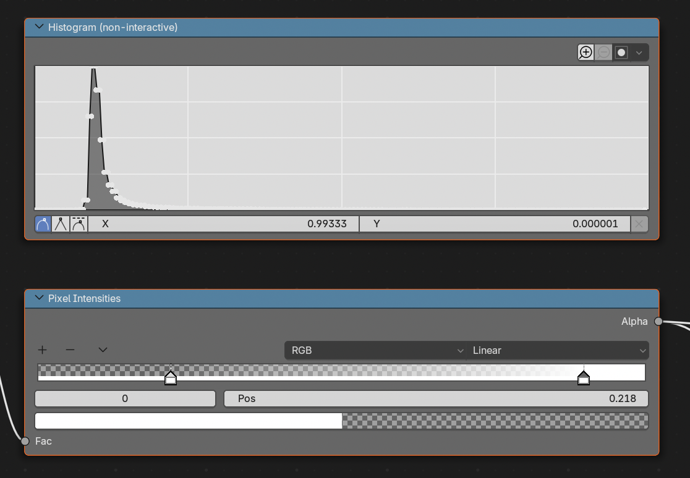

Shading
Shading encompasses the visualization of Blender's objects. The shading options can be found in two places:
- in the Shader Nodes workspace, find this in the topbar.
- in the material tab of the properties.
These two locations contain the same information, laid out in different ways.
The default Microscopy Nodes shaders are built from nodes, and contains information on how the object interacts with light and its transparency. The defaults are listed here separately for the different Microscopy Nodes data-objects.
Volume Shading
The Shader Nodes workspace when selecting a Microscopy Nodes volume:
Data Loading

This is where the data gets read out from the vdb grid (as handed over from the Geometry Nodes) and gets normalized. You will usually not need to edit this.
Reusing shaders
The normalization that is done in Normalize Data is dependent on the specific data, as it rescales the min and max value of the data to 0 and 1 - after it's already transformed to small floating point values for saving to .vdb files.
Essentially, this means its best to keep the normalization of new data when you replace the rest.
Pixel Intensities
The pixel intensities rescale the min and max value, and thus the linear interpolation of the data. This is analogous to a Fiji Brightness & Contrast window.
You can move the two handles to move the min and max.

How this works
This is a Blender Color Ramp that only outputs Alpha, and not Color. We feed in normalized data between 0 and 1 (as represented in histogram) and map this to the color ramp. The color ramp is two nodes of alpha 0 (min) and 1 (max).
This also means you can add extra nodes in here if you want nonlinearity in your pixel intensities, or flip the nodes to invert. However, it is often easier to just change the colormap.
Color LUT

The lookup tables are Color Ramp objects, LUTs can be edited:
- Editing handles
- You can drag to change its position and click on it to get a color picker. To change contrast, its recommended to change the pixel intensities instead of the color.
- The bottom fields are the index, position and color of the selected field - allowing editing of the handles with more precision
- Replacing the LUT by right clicking the LUT and selecting LUTs. This lists multiple colormaps.
- Sequential, monotonic rising or falling, often good for microscopy
- Diverging, distinctive middle of the colormap
- Cyclical, start and end together
- Qualitative, separates consecutive values, good for labelmasks
- Miscellaneous
- Single Color, gives a new black-to-white colormap, to easily edit LUTs
- Flipping the LUT
- either under the down-carrot or under right clicking the LUT
- Flipped LUTs can be loaded by default
Opacity

The tranparency window describes the total contribution of each voxel to the image. If you are in an emission mode, this defines the volume brightness, in scattering mode, this describes the volume density.
Here there are multiple options:
- Clip Min
- Sets all values at 0 as transparent (left from the min in Pixel Intensities).
- Clip Max
- Sets all values at 1 to transparent (right from the max in Pixel Intensities).
- Alpha Baseline
- Constant alpha for all voxels that are not Clipped.
- Alpha Multiplier
- Alpha value that multiplies the input values, and thus linearly increases with intensity. Does not affect Clipped values. Adds onto Alpha Baseline.
Shaders (emission/scatter)
This is where the Microscopy Nodes pre-processing hooks into the default Blender volume interfaces. This is split between an emissive and scattering setup. Currently the easiest way to switch between them is through reloading.

Advanced
Some things are editable in here, such as the Anisotropy of the scattering, which defines whether there is more backward scattering (less penetrant) or more forward scattering.
Additionally, by Adding nodes (from the Add menu or Shift + A), and connecting these together, it's possible to make combined setups for emissive and scattering shaders.
Slice Cube

The Slice Cube section allows slicing of the volume. This has an Object pointer to a cube in the scene (by default the loaded slice cube).
The object bounding box gets fed into the slicer, which sets all regions outside the bounding box to transparent.
How this works
As shown if you press the icon at the top right of the group, how the slicing node works is to take the remapped locations as the Texture Coordinate input provides (mapping the data to the coordinates of the cube space) and compare these to the boundes (1, -1). If positions are not in the range of the cube space, the shader is set to a Transparent Shader.
Surface shading
The Surface object shader is more simple than the volumetric, as it can only have one color, although it can have many properties. The shader does not explicitly load the data, as the data interaction is all done through the threshold in the Geometry options.
Color LUT

The color lookup table works similar to the volume color LUT. However, the surface can only display one value, so the Fac value defines where along the lookup table the color is drawn from.
For a regular color picker you can leave the Fac at 1 and click the rightmost handle. The other way would be to replace this box with a color box (Add > Input > RGB)
Mesh shading

The Principled BSDF node is a combined node that combines features to create different material properties. The Blender manual gives a complete manual to its features.
By default this has two inputs set differently from Blender default, the Base Color and Emission Color/Strength. These colors are set to link to the Color LUT.
The Emission Strength is set to 0 or 0.5 depending on whether this was loaded with emission on or emission off. This is done for consistency, and that dark scenes have masks and surfaces as clearly visible as data, without setting up lighting.
Emission can 'flatten' objects
The feeling of depth in 3D rendering is often due to the interaction of objects with light. When things are emitting light themselves, they can often look flat. For more feeling of depth, it might be better to load with emission off, and set up some form of lighting.
Slice cube
See volume Slice Cube.
Labelmask shading
The label mask shader is very similar to the Surface shader, but is able to read out and use the object id to color by.

Object ID handling
The object id (the value in the label mask) is connected and retrievable from the vertices of the labelmask objects.
This is led into a group that maps it to values between 0 and 1 for the LUT. This has the option of a revolving sequence: ideal for a categorical colormap with distinct values, making the object ids loop through these values. Or a consecutive sequence scaling all values linearly along the object ids, ideal for linear colormaps.
Color LUT
The color lookup table works similar to the volume color LUT. Often categorical colormaps work best for labelmasks, if you have only one channel of masks.